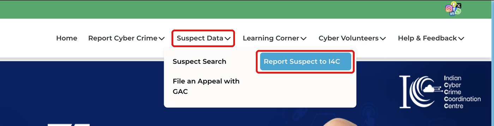
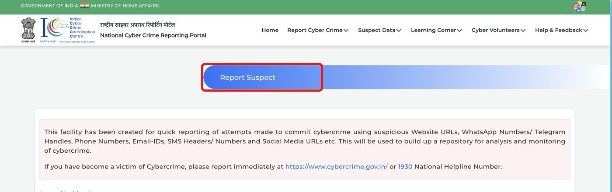
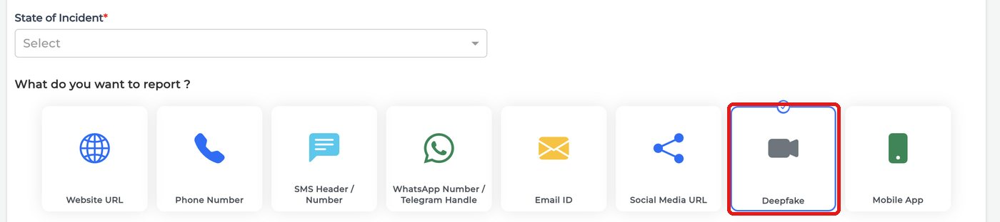
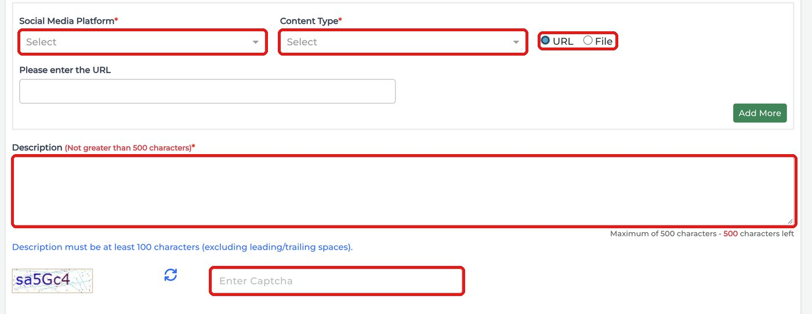

Check a video for a real pulse
Real faces show tiny color changes with every heartbeat. Some deepfakes lack this pulse, but dark lighting or video compression can also hide a real pulse.
MP4, MOV or WEBM, up to 9.6 MB. Larger files are trimmed to 9.6 MB.
Face pulse
Tiny blood-flow changes on the forehead and cheeks.
Heartbeat rhythm
A steady beat, between 58 and 110 per minute.
Skin color shift
Slight color changes as blood moves under the skin.
Your result
Here is what we found in the video.
Pulse wave
Unclear or weak pulse pattern.
Face life signs
Skin color changes are inconsistent.
Heart rate signal
No steady heart rate found.
Report Incident
Three short steps to file your complaint.
Get ready to report
Part 1. Tell us what happened
Answer in simple words. We write the description for the portal from your answers. You can edit it and copy it right here, so you do not need to go back to the result page.
Part 2. Add your video
What do you have?
The portal does not accept files over 10 MB. If your video is bigger than 9.6 MB, we trim it for you. Keep your original file safe.
File on cybercrime.gov.in
- Open the cybercrime websiteGo to cybercrime.gov.in (opens in a new tab). Type the address yourself instead of using a search result, so you do not land on a fake site.
- Go to Suspect DataIn the top menu, open “Suspect Data”. Then click “Report Suspect to I4C”.

- Open Report SuspectThe “Report Suspect” page opens. Choose your “State of Incident” first.

- Choose DeepfakeUnder “What do you want to report?”, click “Deepfake”.

- Add your files and paste your descriptionPick the social media platform and the content type. Choose “URL” to paste a link, or “File” to upload your files, such as the Aletheia evidence report and your video (the portal accepts files up to 10 MB). Paste the description you wrote in step 1 (100 to 500 characters), enter the captcha, then submit.

Final checklist
If any money is being demanded, or you have already paid, call this number right away.
Call 1930How it works
Four simple steps. No tech knowledge needed.
- You add a videoUpload a file or paste a link.
- We look for a pulseEach heartbeat changes your skin color very slightly. A camera can catch this, even though your eyes can't. We check the face for it.
- You get a score0–40% means likely real. 40–70% means we are not sure. 70–100% means likely fake. A higher number means a fake is more likely.
- You get an evidence reportDownload it and attach it when you report.
What is the evidence report?
A PDF report of your result. You attach it to your complaint as proof of what we checked.
- File name and fingerprint. The SHA-256 fingerprint is a code made from your file. If the file changes even slightly, the code changes. It shows the video was not altered after the check.
- Video details. Length and frames per second.
- Score and verdict. The chance the video is fake, and what it means.
- Description text. Not in the PDF. You write it in plain words in the first step of Report Incident, then paste it into the portal form.
- Three checks. Pulse wave, face life signs and heart rate signal.
- Date and time of the check.
Privacy & Safety
Your trust and safety are our top priority. Here is how we handle your media.
1. Your videos are never kept
Uploaded video files and link downloads are processed inside an isolated temporary folder on the server. As soon as the analysis is complete, the video is immediately and permanently deleted. We do not store, copy, or keep your videos.
2. Independent initiative
Aletheia is an independent aid project created to help citizens in India handle non-consensual deepfakes and cyber harassment. Aletheia is not operated by the Indian Cybercrime Coordination Centre (I4C), the Ministry of Home Affairs, or the police.
3. You control reporting
Aletheia does not submit complaints to the government on your behalf. We provide you with the technical verification (SHA-256 fingerprint, evidence report PDF) and a ready-to-paste incident description so you can safely file on cybercrime.gov.in yourself.
4. Emergency Support
If someone is demanding money, blackmailing you, or threatening extortion:
- Call 1930 immediately (National Cyber Crime Helpline).
- Do not send money or engage with the blackmailer.
- Keep all screenshots, chat messages, and the original video file.